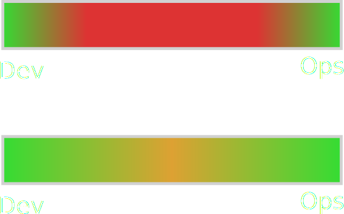

DevOps
co to takiego i czemu nam to potrzebne?
by Krzysztof Suszyński | @ksuszynski

Hej!
Krzysztof Suszyński
- Ewangelizuje z Puppet i Java
- Główny Programista w COI / właściciel Wave Software


- Od 2014r. trener

- Z DevOps pierwszy raz w 2010 roku
- Duże wdrożenia z DevOps / Puppet
- Prezentacje na User Groups i szkolenia pracowników
- Wiele OS modułów: JBoss, Glassfish, XtreemFS, Artifactory, Flyway, Herald


DevOps
Ruch społeczny
Jaka jest wizja i misja?
Dlaczego można się nim zafascynować?
Po co spełniać tą wizję?
Gdzie będzie nasz zysk?
W jaki sposób pomoże?
Na co należy uważać?
Problemy IT
pomiędzy
rozwojem aplikacji a utrzymaniem
Zmiana
Zmiana to jedyna pewna rzecz w każdej firmie
Powinna być wykorzystana
i sprawnie wprowadzona
Zmiana
Nie powinna prowadzić do strachu w żadnym z działów w firmie
Nie powinna oznaczać zwiększonego stresu
Nie powinna oznaczać konieczności „gaszenia pożarów“
Dalsze wyzwania
- Słaba komunikacja = konflikty i niska efektywność
„Programiści nie wdrażają spójnego software'u“
„Administratorzy mają tendencję do opierania się zmianom“
- Proces wytwarzania jest najczęściej zwinny
- Proces utrzymania jest najczęściej statyczny
- Coraz potężniejsze, rozproszone rozwiązania
Devs vs Ops
| Developerzy | Administratorzy | |
|---|---|---|
| Zainteresowanie | Szybkie zmiany | Stabilność środowiska |
| Skala |  |
 |
| Cytaty | „It works on my machine“ |
„It's not server, it's your code“ |
Rozwiązanie?
ITIL?!?
ITIL
ITIL. Hmmm...
- Wyraźny podział umiejętności
- Specjalizacja zespołów
- Wytwarzanie procesów
- Czy załatwia to wymienione problemy?
- Czy to się skaluje? Czy łatwo utrzymać jakość przez dłuższy czas?
Rozwiązanie?
DevOps!
Definicja
„DevOps to praktyka codziennej współpracy i współtworzenia zespołów administracyjnych z zespołami programistów“
Założenia DevOps
- DevOps stosujemy w trakcie trwania całego cyklu życia danej usługi lub dłużej
- Od momentu jej projektowania, przez wykonanie, wdrożenie i utrzymanie
- Poprzez stosowanie wspólnych narzędzi i praktyk
- Automatyzację pracy i mikro wdrożenia
DevOps w punktach
- Infrastucture as a Code
- Continuous build
- Continuous testing
- Continuous inspection
- Continuous integration
- Continuous delivery
- Continuous configuration enforcement
- Continuous deployment
- Continuous monitoring
- Continuous recovery
- Continuous scaling
Kilka uwag!
Czym DevOps nie jest?!
To nie jest No-Ops
„oni zabiorą nam nasze posady“
- współdzielenie odpowiedzialności a nie pozbycia się jej
- współpraca a nie odebranie jej
- uwolnienie ukrytych mocy
Nie chodzi (tylko) o
narzędzia
- przekonanie, że w DevOps chodzi głownie o zastosowanie nowych narzędzi w pracy, takich jak Puppet, Ansible czy Docker
- praktyka wspólnej, codziennej pracy
- wytworzenie kultury i nawyków spójnych z Agile
- wytworzenie procesów minimalizujących możliwość pomyłki
Nie chodzi (tylko) o
kulturę
- Przekonanie, że wystarczy jedynie zacząć współpracować na co dzień
- potrzebne są narzędzia spełniające wymagania obu stron
- narzędzia te muszą wspierać nawyki wspólnej pracy
- obie strony muszą czerpać korzyści
Nie chodzi (tylko) o
połączenie Dev i Ops
- obejmuje również: administratorach sieci
- specjalistów bezpieczeństwa
- architektów systemów
- testerów
- analityków
- management
Nie chodzi (tylko) o
tytuł posady
- bez faktycznej zmiany sposobu pracy nie będzie dużych sukcesów
- zmiana musi być po obu stronach
- zmienia się często układ firmy
Nie chodzi o
wszystko, wszędzie
- po złym wprowadzeniu, upraszcza się DevOps do rozwodnionego Agile
- lub „miłości“ do wszystkich
- codzienne współtworzenie rozwiązań używac wspólnych narzędzi i procesów
Proces DevOps

Krótkie szybkie iteracje
Zakres DevOps

Zmiana w całej firmie
Legenda: czerwony -- zielony - ilość osób z danymi umiejętnościami
Przykłady
Zaledwie kilka
Puppet
package { 'postgresql':
ensure => 'installed',
}
service { 'postgresql':
ensure => 'running',
require => Package['postgresql'],
}Vagrant
Vagrant.configure(2) do |config|
config.vm.box = "puppetlabs/ubuntu-14.04-64-nocm"
# Provision with Bash
config.vm.provision :shell,
inline: "echo Hi $(cat /etc/issue)"
endDocker
# I <3 NYNY
FROM centos:7
MAINTAINER Krzysztof Suszynski <k.s@gmail.com>
RUN yum install -y ruby-devel
RUN gem install sinatraJnario
Feature: addition Scenario: Add two numbersval calculator = new Calculator()Given I have entered "50" into the calculatorcalculator.enter(args.first)And I have entered "70" into the calculator When I press "add"calculator.press(args.first)Then the result should be "120"calculator.result => args.first
Jenkins DSL
def proj = 'Netflix/asgard'
def api = new URL("https://api.github.com/repos/${proj}/branches")
def branches = new JsonSlurper().parse(api.newReader())
branches.each {
def branchName = it.name
def jobName = "${project}-${branchName}".replaceAll('/','-')
job(jobName) {
scm {
git("https://github.com/${project}.git", branchName)
}
}
}